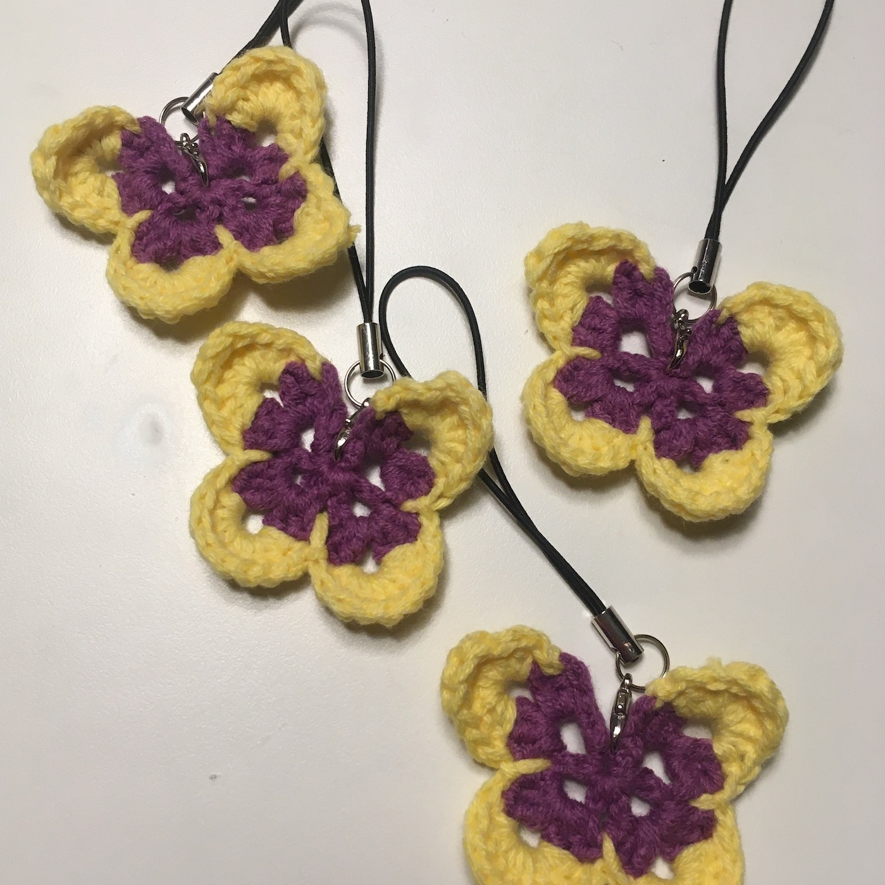

일본군성노예제 문제해결을 위한 정기 수요시위에 참여하게 되어서, 마침 노란색과 보라색 실도 있고 해서 노랑보라나비 소품을 떴다.
일본군‘위안부’ 문제와 관련한 상징물이 왜 나비일까? 검색해보니 이런 뜻이 있다고 한다.
“일본군 ‘위안부’ 피해 할머니들에게는 두 가지 꿈이 있었다. 부모와 친구가 있는 고향으로 돌아가는 것이 하나요, 전쟁과 인권유린이 없는 평화로운 세상의 실현이 다른 하나다. 전자를 상징하는 것이 ‘도라지꽃’이요, 평화의 세상을 상징하는 것이 ‘나비’다. 도라지꽃은 일본군 성노예로 유린당할 때 비원이었다면, 나비는 할머니들이 살아생전 이 땅에 실현하고 싶은 미래의 소망이다.”
https://www.hani.co.kr/arti/society/society_general/749151.html
상징색은 노란색과 보라색으로 친구에게 전해들었는데, 오랜 상징색인 듯 한데 정확한 유래는 찾지 못했다.
-
쓰이고 나눠진 곳 : 1685차 수요시위-전쟁과여성인권박물관